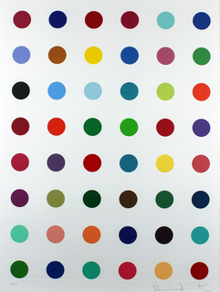
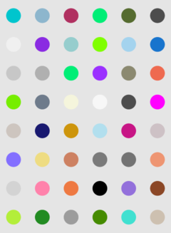

Damien Hirsts’ paintings with random coloured dots on white canvas go for thousands, e.g. this 8x6 regular grid spot-painting, canvas size 50.0 x 71.1cm, with price tag of £15k-20k:

Figure 1: ©artsy.net
As I work with points scattered on various sub-spaces, I decided to write a small Shiny-app for generating such spot patterns. Here is an example with similar specs as the £20k painting:

Figure 2: Generated automatically
The app is available at Shinyapps, “Spot painting”. Go explore your own colourful spot designs!